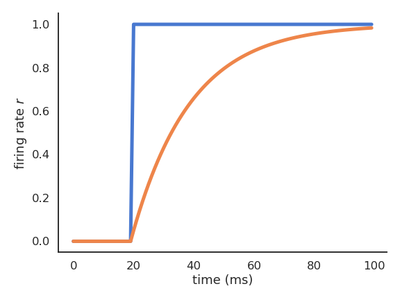

ANNarchy
Artificial Neural Networks architect
![]()
Rate-coded and spiking neurons
- Rate-coded neurons only represent the instantaneous firing rate of a neuron:
\tau \, \frac{d v(t)}{dt} + v(t) = \sum_{i=1}^d w_{i, j} \, r_i(t) + b
r(t) = f(v(t))

- Spiking neurons emit binary spikes when their membrane potential exceeds a threshold (leaky integrate-and-fire, LIF):
C \, \frac{d v(t)}{dt} = - g_L \, (v(t) - V_L) + I(t)
\text{if} \; v(t) > V_T \; \text{emit a spike and reset.}

Many different spiking neuron models are possible
- Izhikevich quadratic IF (Izhikevich, 2003).
\begin{cases} \displaystyle\frac{dv}{dt} = 0.04 \, v^2 + 5 \, v + 140 - u + I \\ \\ \displaystyle\frac{du}{dt} = a \, (b \, v - u) \\ \end{cases}
- Adaptive exponential IF (AdEx, Brette and Gerstner, 2005).
\begin{cases} \begin{aligned} C \, \frac{dv}{dt} = -g_L \ (v - E_L) + & g_L \, \Delta_T \, \exp(\frac{v - v_T}{\Delta_T}) \\ & + I - w \end{aligned}\\ \\ \tau_w \, \displaystyle\frac{dw}{dt} = a \, (v - E_L) - w\\ \end{cases}

Realistic neuron models can reproduce a variety of dynamics
Biological neurons do not all respond the same to an input current: Some fire regularly, some slow down with time., some emit bursts of spikes…
Modern spiking neuron models allow to recreate these dynamics by changing just a few parameters.

Populations of neurons
- Recurrent neural networks (e.g. randomly connected populations of neurons) can exhibit very rich dynamics even in the absence of inputs:


Oscillations at the population level.
Excitatory/inhibitory balance.
Spatio-temporal separation of inputs (reservoir computing).
STDP: Spike-timing dependent plasticity
Synaptic efficiencies actually evolve depending on the the causation between the neuron’s firing patterns:
If the pre-synaptic neuron fires before the post-synaptic one, the weight is increased (long-term potentiation). Pre causes Post to fire.
If it fires after, the weight is decreased (long-term depression). Pre does not cause Post to fire.

STDP: Spike-timing dependent plasticity
- The STDP (spike-timing dependent plasticity, Bi and Poo, 2001) plasticity rule describes how the weight of a synapse evolves when the pre-synaptic neuron fires at t_\text{pre} and the post-synaptic one fires at t_\text{post}.
\frac{dw}{dt} = \begin{cases} A^+ \, \exp - \frac{t_\text{pre} - t_\text{post}}{\tau^+} \; \text{if} \; t_\text{post} > t_\text{pre}\\ \\ A^- \, \exp - \frac{t_\text{pre} - t_\text{post}}{\tau^-} \; \text{if} \; t_\text{pre} > t_\text{post}\\ \end{cases}
STDP can be implemented online using traces.
More complex variants of STDP (triplet STDP) exist, but this is the main model of synaptic plasticity in spiking networks.

ANNarchy (Artificial Neural Networks architect)
Vitay et al. (2015)
ANNarchy: a code generation approach to neural simulations on parallel hardware.
Frontiers in Neuroinformatics 9. doi:10.3389/fninf.2015.00019

Features
Simulation of both rate-coded and spiking neural networks.
Only local biologically realistic mechanisms are possible (no backpropagation).
Equation-oriented description of neural/synaptic dynamics (à la Brian).
Code generation in C++, parallelized using OpenMP on CPU and CUDA on GPU (MPI is coming).
Synaptic, intrinsic and structural plasticity mechanisms.
Echo-State Network

- ESN rate-coded neurons follow first-order ODEs:
\tau \frac{dx(t)}{dt} + x(t) = \sum w^\text{in} \, r^\text{in}(t) + g \, \sum w^\text{rec} \, r(t) + \xi(t)
r(t) = \tanh(x(t))
- Neural dynamics are described by the equation-oriented interface:
import ANNarchy as ann
ESN_Neuron = ann.Neuron(
parameters = dict(tau=30.0, g=1.0 , noise=0.01),
equations = [
'tau * dx/dt + x = sum(in) + g * sum(exc) + noise * Uniform(-1, 1)',
'r = tanh(x)'
]
)Notebook: Echo-State Network


\tau \frac{dx(t)}{dt} + x(t) = \sum_\text{input} W^\text{IN} \, r^\text{IN}(t) + g \, \sum_\text{rec} W^\text{REC} \, r(t) + \xi(t)
r(t) = \tanh(x(t))
Notebook: IBCM learning rule


Variant of the BCM (Bienenstock, Cooper, Munro, 1982) learning rule.
The LTP and LTD depend on post-synaptic activity: homeostasis.
\Delta w = \eta \, r^\text{pre} \, r^\text{post} \, (r^\text{post} - \mathbb{E}[(r^\text{post})^2])
Notebook: Reward-modulated RC network of Miconi (2017)


e_{i, j}(t) = e_{i, j}(t-1) + (r_i (t) \, x_j(t))^3
\Delta w_{i, j} = - \eta \, e_{i, j}(T) \, (R - R_\text{mean})

Spiking neurons
Spiking neurons must also define two additional fields:
spike: condition for emitting a spike.reset: what happens after a spike is emitted (at the start of the refractory period).
A refractory period in ms can also be specified.
- Example of the Leaky Integrate-and-Fire:
C \, \frac{d v(t)}{dt} = - g_L \, (v(t) - V_L) + I(t)
\text{if} \; v(t) > V_T \; \text{emit a spike and reset.}
LIF = ann.Neuron(
parameters = dict(
C = 200.,
g_L = 10.,
E_L = -70.,
v_T = 0.,
v_r = -58.,
I = 0.25,
),
equations = [
ann.Variable(
'C * dv/dt = g_L * (E_L - v) + I',
init='E_L'
),
],
spike = "v >= v_T",
reset = "v = v_r",
refractory = 2.0
)Notebook: AdEx neuron - Adaptive exponential Integrate-and-fire


\tau \cdot \frac{dv (t)}{dt} = E_l - v(t) + g_\text{exc} (t) \, (E_\text{exc} - v(t)) + g_\text{inh} (t) \, (E_\text{inh} - v(t)) + I(t)
Notebook: Synaptic transmission


equations = [
# Membrane potential
'tau*dv/dt = (E_L- v) + g_a + g_b + alpha_c',
# Exponentially decreasing
ann.Variable(
'tau_b * dg_b/dt = -g_b',
method='exponential'
),
# Alpha-shaped
ann.Variable(
'tau_c * dg_c/dt = -g_c',
method='exponential'
),
ann.Variable('''
tau_c * dalpha_c/dt =
exp((tau_c - dt/2.0)/tau_c) * g_c
- alpha_c''',
method='exponential'
),
],Notebook: COBA - Conductance-based E/I network


\tau \, \frac{dv (t)}{dt} = E_l - v(t) + g_\text{exc} (t) \, (E_\text{exc} - v(t)) + g_\text{inh} (t) \, (E_\text{inh} - v(t)) + I(t)
Notebook: STP


Notebook: STDP


\begin{cases} \tau^+ \, \dfrac{d x(t)}{dt} = - x(t) \\ \\ \tau^- \, \dfrac{d y(t)}{dt} = - y(t) \\ \end{cases}